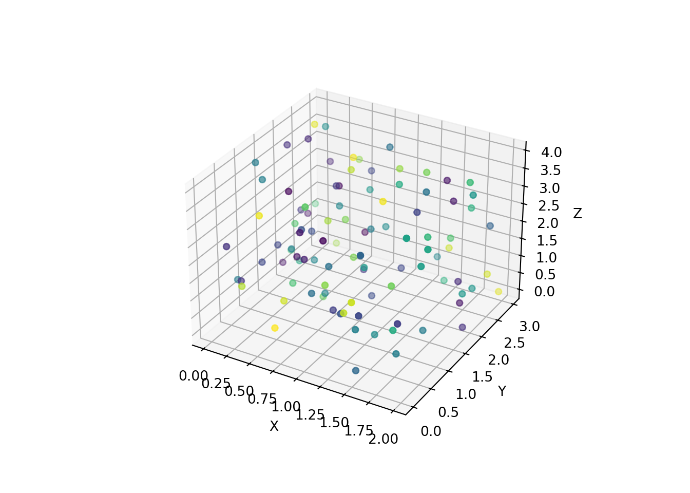

# Getting the version of Python we are using :
import sys
sys.version_infosys.version_info(major=3, minor=12, micro=4, releaselevel='final', serial=0)In this article, I will try to do linear regressions with Python. This is also an occasion for me to try Python with Quarto.
This section is dedicated to using Python with Quarto, since this website was done using Quarto (if you want to know more about it, you can check their documentation here and this project of mine). If you do not use Quarto, you can just skip this section.
The Quarto Markdown format (with the .qmd extension) allows to embed code and text, formatted with Markdown. To work with Python code in Quarto, we first have to use an engine that supports Python. For that, we can use python3 or jupyter for examples. Thus, in our YAML header, we would enter :
---
engine: python3
# or :
engine: jupyter
---We can check our engines with quarto with the command quarto check. This function is designed to “verify [the] correct functioning of Quarto installation” (from its description in documentation). Running it returns the versions of different kernels that we can use.
Finally, to include python code in our Quarto file, we can write :
```{python}
# Some python code here
```For example :
# Getting the version of Python we are using :
import sys
sys.version_infosys.version_info(major=3, minor=12, micro=4, releaselevel='final', serial=0)Here, we are for example using Python 3.12.
Depending on the engine we are using, we can also make use of other languages in the same Quarto document. Specifying the python3 engine in the YAML header of our Quarto document, we can run Julia and R in it. For that, we need packages, such as JuliaCall for using Julia with R.
Testing Julia yields :
# Getting the version of Julia we are using :
using InteractiveUtils
InteractiveUtils.versioninfo()Julia Version 1.10.4
Commit 48d4fd48430 (2024-06-04 10:41 UTC)
Build Info:
Official https://julialang.org/ release
Platform Info:
OS: macOS (x86_64-apple-darwin22.4.0)
CPU: 4 × Intel(R) Core(TM) i5-8210Y CPU @ 1.60GHz
WORD_SIZE: 64
LIBM: libopenlibm
LLVM: libLLVM-15.0.7 (ORCJIT, skylake)
Threads: 1 default, 0 interactive, 1 GC (on 4 virtual cores)
Environment:
DYLD_FALLBACK_LIBRARY_PATH = /Library/Frameworks/R.framework/Resources/lib:/Library/Java/JavaVirtualMachines/jdk-11.0.18+10/Contents/Home/lib/serverTesting R yields :
# Getting the version of R we are using :
version _
platform x86_64-apple-darwin20
arch x86_64
os darwin20
system x86_64, darwin20
status
major 4
minor 3.3
year 2024
month 02
day 29
svn rev 86002
language R
version.string R version 4.3.3 (2024-02-29)
nickname Angel Food Cake Since the rest of the article will exclusively be using Python, we will not mention further details of engines in Quarto. It is however interesting to keep in mind that Quarto allows this multiple integration.
This section of the article treats how to do a simple linear regression with Python. We will first generate random data, we will plot it, and we will then add the linear regression to our plot.
I found two main libraries to generate random data in Python. The first one is the random library, and the second one is the numpy library.
With the random library, we can use the random method to generate by default a float number between 0 and 1. A way to create a vector of 100 random values is to use the random method between square brackets, followed by the for instruction, similar to the one in Julia. This will generate a list of size fixed, such that :
import random
y = ([random.random() for _ in range(100)])
x = ([random.random()*y[_] for _ in range(100)])Let us comment a bit this code :
random.random() refers to the method random() inside the random library._ combined with for loops to iterated for a set number of times. By default, the _ symbol just refers to the last variable in memory of Python, but it can also be used like that.range() function allows to create a range object in Python. More specifically :[It] return[s] an object that produces a sequence of integers from start (inclusive) to stop (exclusive) by step. Range(i, j) produces i, i+1, i+2, …, j-1. Start defaults to 0, and stop is omitted! range(4) produces 0, 1, 2, 3. These are exactly the valid indices for a list of 4 elements. When step is given, it specifies the increment (or decrement).
A second way of generating random data is using the numpy library. For that, we use the numpy.random.rand() method :
import numpy
numpy.random.rand(100)array([0.86254394, 0.74163881, 0.14768129, 0.14934972, 0.65119136,
0.38162095, 0.11118557, 0.13272156, 0.17725165, 0.20485326,
0.10496782, 0.09506275, 0.63320687, 0.16311847, 0.90797926,
0.01688592, 0.17749381, 0.61306927, 0.99767533, 0.28024172,
0.15195045, 0.77375383, 0.47169045, 0.14463562, 0.40362518,
0.51274508, 0.85488742, 0.40519313, 0.35437244, 0.21876326,
0.43098253, 0.12971904, 0.23162815, 0.739798 , 0.74238613,
0.98017982, 0.51949168, 0.20232348, 0.81906564, 0.50051391,
0.28757961, 0.24945211, 0.28628847, 0.14053342, 0.44789729,
0.18907726, 0.23383225, 0.18181597, 0.32942785, 0.92108476,
0.55910032, 0.63171191, 0.59871788, 0.3962234 , 0.2579303 ,
0.04177061, 0.62641287, 0.74611001, 0.04247077, 0.77501384,
0.70472132, 0.55842491, 0.07506288, 0.04856047, 0.87206189,
0.7252026 , 0.6927993 , 0.37769637, 0.36486275, 0.44312002,
0.13962919, 0.09076356, 0.77906699, 0.71021402, 0.30281236,
0.95389882, 0.98579859, 0.2922806 , 0.4326272 , 0.03986694,
0.78868615, 0.89206057, 0.85421043, 0.95104158, 0.41921568,
0.76663852, 0.67659017, 0.14392962, 0.38898023, 0.00264178,
0.19915115, 0.22458151, 0.11859189, 0.856862 , 0.56636816,
0.34821464, 0.20193083, 0.62782954, 0.28748353, 0.09333037])Here, the numpy.random.rand() method also generates a random real number between 0 and 1. We are going to stick with the first x variable created for the rest of the section.
Now that we generated some data, let us plot it. To do that, we can use the matplotlib library. More specifically, we are going to use pyplot inside matplotlib, and are thus going to import matplotlib.pyplot :
import matplotlib.pyplot
matplotlib.pyplot.scatter(x,y)
scatter() method of matplotlib.pyplot allows to plot a scatterplot with two vectors of the same size.The
scatter()“method” can also be considered as a function. This distinction seems to also exist in other programming languages and is definitely worth understanding. For the sake of linear regressions, it does not matter for now to develop a full understanding of this distinction. In the rest of this article, we will thus stick to the “method” term without further explanation.
We are now going to fit our statistical model with our randomly generated values. In order for us to do that, we can use the scipy.stats library. This library has a linregress() method that allows to compute the OLS estimates to explain the second variable with the first one :
import scipy
model = scipy.stats.linregress(x,y)
modelLinregressResult(slope=np.float64(0.8861331178670419), intercept=np.float64(0.27955182064906725), rvalue=np.float64(0.6698123441696561), pvalue=np.float64(2.5355776513129585e-14), stderr=np.float64(0.09923092351159478), intercept_stderr=np.float64(0.03175982980968593))We see that the scipy.stats.linregress() method returns a five elements object. To make this method easier to use, we could generate five variables, define a function with those variables and plot a line based on this function :
# We define the five variables from the linregress() method :
slope, intercept, r, p, std_err = scipy.stats.linregress(x, y)
# We define a function returning a linear function with the slope and the intercept :
def myfunc(x):
return slope * x + intercept
# We create a list object with the list() function that takes as an argument a map object, based on our function and on the variable x :
mymodel = list(map(myfunc, x))
mymodel[np.float64(1.1128942280962768), np.float64(0.2916409706105338), np.float64(0.2991161608933708), np.float64(0.4997933214176833), np.float64(0.2846358035757908), np.float64(0.2958402578321745), np.float64(0.44525931957417964), np.float64(0.7827868867174143), np.float64(0.28321881841037666), np.float64(0.298934068042868), np.float64(0.3026888494760142), np.float64(0.6818035790582518), np.float64(0.6587836585846951), np.float64(0.2957783132146901), np.float64(0.4832992764009061), np.float64(0.6361548357422078), np.float64(0.630053058441783), np.float64(0.45692758628392455), np.float64(0.8065391432387767), np.float64(0.3839440557628022), np.float64(0.3023401748259388), np.float64(0.3130267228455016), np.float64(0.5294777477264555), np.float64(0.30612889158049367), np.float64(0.31849191787723197), np.float64(0.48923990251987515), np.float64(0.704104118733439), np.float64(0.28264369648810617), np.float64(0.2855984299573356), np.float64(0.41603499472583594), np.float64(0.4254092988283936), np.float64(0.518151643380156), np.float64(0.3118143584778062), np.float64(0.34506616312513166), np.float64(0.3683244663550261), np.float64(0.5230936979869635), np.float64(0.39942298428001644), np.float64(0.29520467525234534), np.float64(0.6008455784860726), np.float64(0.9095306955323068), np.float64(0.31360445462039027), np.float64(0.2951812623049543), np.float64(0.47418666224355815), np.float64(0.580809607453203), np.float64(0.30767960241529246), np.float64(0.7797901609905709), np.float64(0.8147561874228744), np.float64(0.4059956752767153), np.float64(0.7161276103945875), np.float64(0.9238745536124633), np.float64(0.6417423046950912), np.float64(0.2941625362633853), np.float64(0.30119136083497006), np.float64(0.5635820545395647), np.float64(0.676458344685724), np.float64(0.3211765068790482), np.float64(0.5210826526646316), np.float64(0.6672905350694212), np.float64(0.3200246347981671), np.float64(0.32619970340318083), np.float64(0.5025089400872462), np.float64(0.3303849844966191), np.float64(0.5428319198908202), np.float64(0.5844300924615313), np.float64(0.3845303864829479), np.float64(0.2843615424115652), np.float64(0.4703663263099595), np.float64(0.7894843745095186), np.float64(0.6485354115688924), np.float64(0.40684160932144253), np.float64(0.46955661264659987), np.float64(0.3761774904810534), np.float64(0.6450293362797632), np.float64(0.3218344335713008), np.float64(0.379925875670456), np.float64(0.5947156995072862), np.float64(0.47163789528217215), np.float64(0.5602910878865376), np.float64(0.7040729777299035), np.float64(0.3738833321485584), np.float64(0.32819452082886447), np.float64(0.7198901903386494), np.float64(0.35250259410914075), np.float64(0.34720439717918916), np.float64(0.3126568908611336), np.float64(0.596085662490456), np.float64(0.7128955406373321), np.float64(0.2951996989020772), np.float64(0.7710109747998166), np.float64(0.4201674733931373), np.float64(1.0289873868069592), np.float64(0.34938504559644684), np.float64(0.3154464553803972), np.float64(0.5564971189918999), np.float64(0.38386326534186477), np.float64(0.32679835893396064), np.float64(0.32736973730411856), np.float64(0.5924286710800826), np.float64(0.9637172760610173), np.float64(0.3030523018705367)]The definition of the variable mymodel is worth explaning a bit more in details. The list() function is used to create a list object (which is considered one of the most versatile objects in Python), like the c() function creates a vector in R. The map() function returns a map object, defined as :
map(func, *iterables) –> map object Make an iterator that computes the function using arguments from each of the iterables. Stops when the shortest iterable is exhausted.
in the Python documentation.
Now, if we want to add this line to our plot, we can run :
matplotlib.pyplot.scatter(x,y)
matplotlib.pyplot.plot(x, mymodel)While it is curious that the variable mymodel is displayed as a continuous line, it works, so I am fine with this solution for now.
If we want only the more relevant information, we can choose to only work with the two first elements of the array, and plot it, we can do in a more concise way :
def f(x):
return scipy.stats.linregress(x, y)[1]+numpy.dot(x,scipy.stats.linregress(x, y)[0])
float(scipy.stats.linregress(x, y)[1]),float(scipy.stats.linregress(x, y)[0])(0.27955182064906725, 0.8861331178670419)matplotlib.pyplot.scatter(x,y)
matplotlib.pyplot.plot(x, f(x))
We note here that we are using the numpy.dot() method from the numpy library. This method allows us to do the dot product of two different matrixes. In our case, doing only x * scipy.stats.linregress(x,y)[0] would have returned an error, since x and the other term are not of the same dimension. This method thus allows to avoid this error by vectorizing the multiplication.
Now that we covered a how to perform a simple linear regression with Python, let us move to a multiple linear regression.
In this section, we are going to perform a multiple linear regression. First, we are going to generate data and fit our model. Then, we will plot a static scatter plot, and finally a rotatable plot.
First, let us generate some random data and fit our model :
# We randomly generate four variables of length 100 :
w,x,y,z = (numpy.dot([random.random() for _ in range(100)],_) for _ in (1,2,3,4))
# Just to check the length :
len(y)100If we now want to limit ourselves to a four dimensional problem, we can plot 3D graphs with colors representing the fourth dimension. In this section, we are first going to plot a static graph.
# We create the framework of a plot first, that we name "figure" :
figure = matplotlib.pyplot.figure()
# In this figure, we are going to use the add_subplot method to create a three dimensional projection :
projection = figure.add_subplot(projection='3d')
# In this three dimensional space, we are going to project our points in a scatterplot way.
# The argument 'c' stands for the color of the points :
projection.scatter(x,y,z, c = w)
# Finally, we give each of our axis a name :
projection.set_xlabel("X")
projection.set_ylabel("Y")
projection.set_zlabel("Z")
The syntax of this example can be a bit hard to understand at first, but is required when using matplotlib.pyplot library.
Now it’s time for a rotatable plot, like in the previous article. Fortunately, the plotly library does also exist for Python, which is great, because I did not find any other library that yielded a similar result. However, to use plotly, we need the pandas library.
We can thus create a dataframe object from a dictionary with the four previously created vectors. In the end, we get :
import plotly.express as px
import pandas
data = {'c1':[x],'c2':[y],'c3':[z],'c4':[w]}
X = pandas.DataFrame(data)
fig = px.scatter_3d(X, x,y,z, color=w)
fig.show()We note that this yields a plot with similar features to the ones obtained in the previous article with Julia. The reason for that is that both obtained plots are done using the plotly library.
If we now want to show the three dimensional plane that satisfies the OLS equation, we could use several libraries.
Let us say that we want to explain the z variable by x and y. One approach that seems to be widely used is to use the sklearn library. More specifically, we could use the sklearn.linear_model package :
import sklearn.linear_model
# We create an object that regroups x and y :
regressors = numpy.array([[x],[y]])
# Now, we compute the estimates using a multinomial linear regression :
# We create the object 'model' that has the LinearRegression() class from the sklearn.linear_model package :
model = sklearn.linear_model.LinearRegression()
# We have to modify the dimensions of our data :
nsamples, nx, ny = regressors.shape
regressors_2 = regressors.reshape((nsamples,nx*ny))
# We make it fit our data :
X = numpy.array([[1, 2, 3], [2, 3, 4], [3, 4, 5], [4, 5, 6]])
Y = numpy.array([1, 2, 3, 4])
# Create an instance of the LinearRegression class
reg = sklearn.linear_model.LinearRegression()
# Fit the model to the data
reg.fit(X, Y)LinearRegression()In a Jupyter environment, please rerun this cell to show the HTML representation or trust the notebook.
LinearRegression()
Now that we have determined our model, we can plot its three dimensional plane on a plot :
fig = px.scatter_3d(X, x,y,z, color=w)
fig.show()Test.